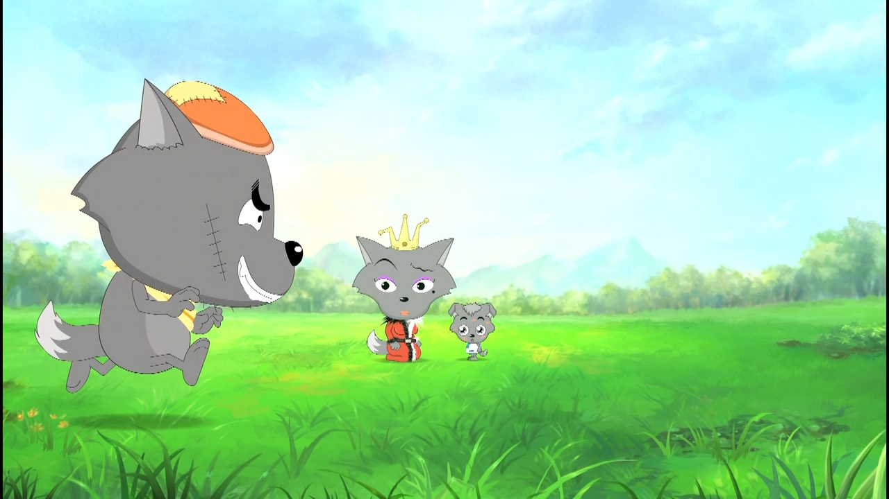

-
2017年2月14日

今天是一个特别的日子，给你做了这样的一个网站，不知道算不算a big big surprise呢！亲爱的，即使生活不是那么轻易，但我希望你在我的未来里。
-
2017年1月12日
结束了一个很长，也很认真的备考周。虽然计算机网络的结果，不是那么令人满意，但是终究是结束了。接下来就是欢快地打滚，收拾收拾行李去南宁咯。坐上车以后，发现居然乘坐了一辆国际列车（经过越南）。然而出国的魅力再大，也不及终点是你。
-
2016年10月1日
听说，熬过异地恋了的，都堪称牛逼人物。而我们属于牛逼养成中。湖南娄底，一个不大不小的城市，也见证了我们的牛逼养成。曾经想要去很多很多地方旅行，后来渐渐觉得旅行的地点并不重要，一个人出发没有关系，硬座也无所谓，十六七个小时也可以忍受，只要火车的另一头有你就好。在这里，享受人生的第一个烛光晚餐。生日蛋糕的蜡烛燃起的烛光，自己炸的猪排假装是牛排，葡萄味的饮料假装有葡萄酒。谁说这不是最好的烛光晚餐呢？
-
2016年6月30日
看了二宝的美人骨之后，一直想和你去一趟西安。想去吃周生辰和时宜吃的米家泡馍，想去看大雁塔，想去看四月的樱花（只可惜不是四月）。七月的艳阳，却暖不到华山之巅。凌晨的华山，风吹得树梢呼呼作响。我第一次体会到长夜居然如此漫长与寒冷。抖着哆嗦，终于赢来了日出。爬完华山，我们立刻赶回北京的火车。而你到了北京之后，几乎没有休息的时间，又要坐上回南宁的火车。23个小时再加上晚点了八个小时的硬座。当你到了寝室，给我打电话的时候，听着你疲惫的声音，我心一抽一抽地疼。你心里住着一个super man，总想为我和你家里人撑起一片天，却鲜少顾及自己。我想照顾好你内心的那个小super man。
-
2014年10月1日
体验过十一的北京，都知道那是怎样的熙熙攘攘。就是这人山人海的时候，你跨越了大半个中国来看我。在过天安门体检的时候，排了很长的队，想起了一句歌词：“人潮拥挤我能感觉你，放在我手心里你的真心。”接下来的几天，天气阴冷阴冷的，有时候还伴着小雨。可是，有什么所谓呢，有你在，便是晴天。
-
2014年6月8日
今天的我们，结束了高考。没有预想中的撕书满天飞，也没有刑满解放的欢脱感。在长达一年的备考期间，经常做各个地方的题目。每每做着模拟题，总会觉得，能通过高考去到各个地方，特别神奇。后来我真的去了一个很远的地方，却也是一个离你很远的地方。
-
2011年9月3日
在李明瑞纪念馆，我们在一起了。算一算已经这么多年。虽然中途争争吵吵，分分合合。在此纪念我最勇敢的也最成功的减肥。刚刚在一起的时候，想要变得更好，努力地去减肥。这是一个人的秘密。每天排队打饭的时候，努力说服自己，我就点白菜和蒸鸡蛋，把菜吃完就飞奔回寝室。可惜，之后，你一直灌毒鸡汤，你更喜欢胖一点的我。大学更加，每每跟你说要减肥，第二天三只松鼠的快递就到了，可气可恨！
-
2011年8月23日
今天的我们，踏入了高中的殿堂。拮据的我们，每每周末，走路去距离学校一个小时左右的超市买苹果，一起打打闹闹冲淡了行程的疲倦。你总会背上那个大大的黑色的书包，往往回来的时候，书包就变胖了。最喜欢跟你抢书包背，但是没有几次是成功的。你说，最喜欢一打开抽屉时候，满满的苹果香。
-
2011年6月26日
;考完中考的时候，天空下着淅淅沥沥的小雨。把三年的行李都搬回家以后，我们去照大头贴。已经过了大头贴疯行的时候，可是我们依旧兴奋地选背景，站在一个小隔间里，认真地摆pose，留下人生的第一张合照。
-
2010年某月日
初二下学期的某一天开始，我们开始写信或者小纸条。当时我的QQ名字叫“泪轻寒”，你的是“末日天使”，信的开头就是以Q名为称呼，中二的我们还觉得时髦至极。信是用一支矮胖矮胖的按动笔夹着，下了晚自习以后，等所有的人走光，悄悄放到对方的抽屉里。不知道为什么要写信，也不记得从何时开始，只是，就这样写了，写了一盒又一盒。也许从那以后，我就喜欢上了矮胖矮胖的按动笔吧，以至于我的大部分笔都是这样的。
-
2008年9月1日
带着憧憬和喜悦，进入了初中。虽然现在距离认识你已经一年之久，但是除了知道你姓甚名谁，并无深入了解。初中以后，好像差不多每次，都是和你上下桌，于是便渐渐熟悉了。这算不算缘起呢？我总觉得我是一个很健忘的人，殊不知聪慧的大脑，让我选择性地忘记了很多无关紧要的人，和琐碎的事情，让我有更多的空间，存储重要的人和重要的事情。待续未完。（至于啥时候续写，我就不知道了。）